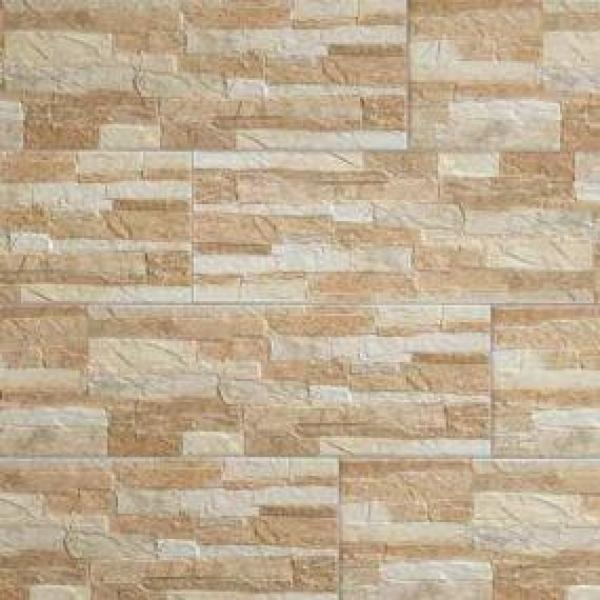
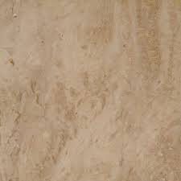
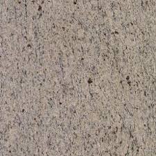

Burkolólapok
A kerámia burkolólapok a mediterrán stílus meghatározó elemei,
így egy olasz és spanyol csempegyár kínálatából sem hiányoznak a jellegzetesen mediterrán termékcsaládok.
Az alábbiakban tanácsokat adunk ahhoz, hogyan is kell a megfelelő burkolólapot kiválasztani.
Hogyan válasszunk?
A megfelelő szín kiválasztásának első és egyben legfontosabb szabálya:
célszerű az adott helyiségben uralkodó színvilághoz igazítani a
burkolólapok színét. Éppen ezért vessen egy pillantást a falakra,
az ablakokra, az ajtókra, valamint az adott helyiség berendezéseire.
És ne feledje: a világos, nagyméretű burkolólapok optikailag nagyobbnak
láttatják a legkisebb helyiséget is!
Kültéri burkolólapok



Lehetséges elrendezések
- Párhuzamos elrendezés
- Átlós elrendezés
- Sakktábla
- Csúsztatva lerakott burkolólapok
- Különböző méretek
- A padló mintázata